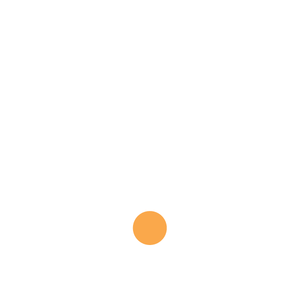

 You Plant is now Online!
You Plant is now Online!
 Your Plant is offline!
Your Plant is offline!
DevPHC Data
Developing Plant Human Communication Interface Data

Data From ESP8266
Sensor Value: /1000
calculating..